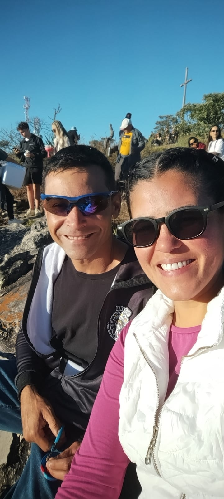
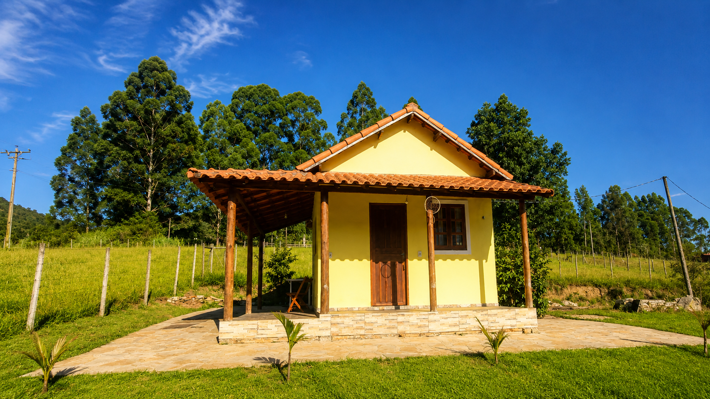
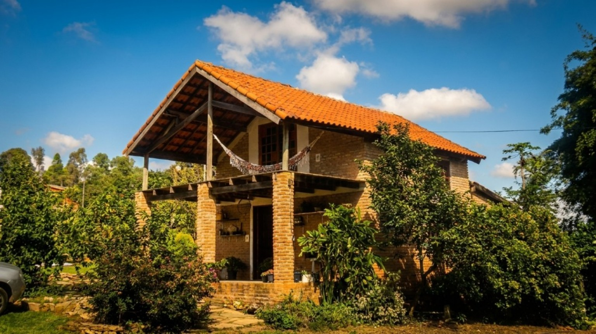
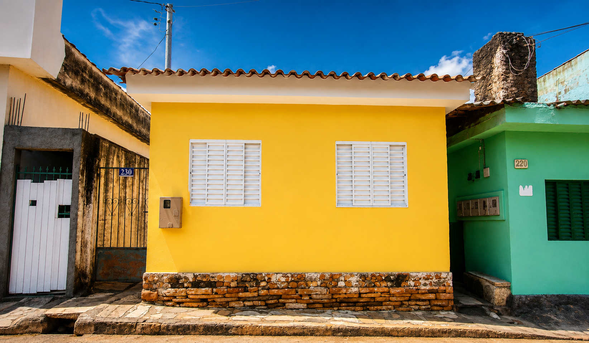
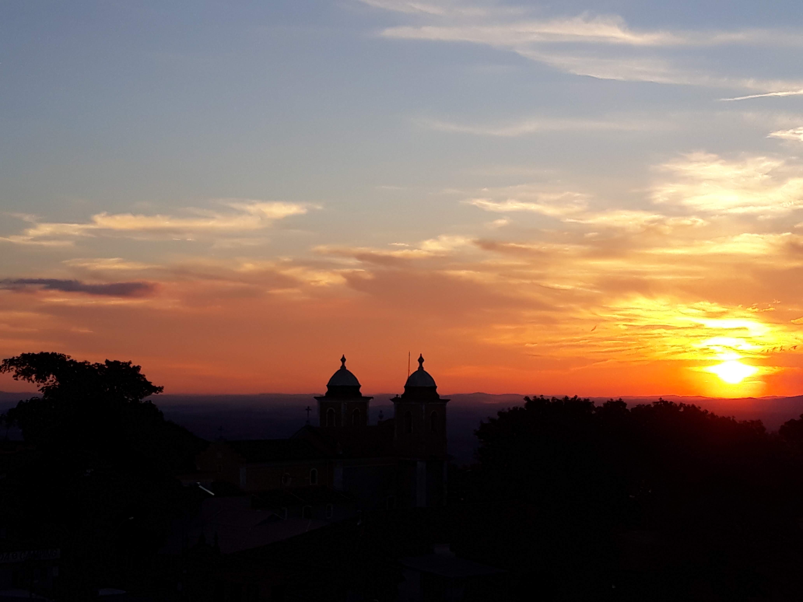

🌿 Bem-vindo ao Sítio Olho D'Água
Um refúgio para descansar, respirar ar puro e viver a tranquilidade da natureza.
Aqui você encontra chalés aconchegantes, paisagens encantadoras e experiências únicas em meio ao campo.
Um refúgio para descansar, respirar ar puro e viver a tranquilidade da natureza.
Aqui você encontra chalés aconchegantes, paisagens encantadoras e experiências únicas em meio ao campo.

Somos Fernando e Priscila, apaixonados pela vida no campo e pela simplicidade que ela oferece.
Há mais de oito anos cuidamos do Sítio Olho D'Água com dedicação e carinho, preservando a natureza e compartilhando esse espaço especial com pessoas que desejam viver uma experiência diferente.
Além da hospedagem, cultivamos hortas, pomares e produzimos mel e própolis em nosso apiário, sempre respeitando o equilíbrio da natureza.
Escolha a acomodação que mais combina com a sua viagem. Temos opções para casais, famílias e grupos que desejam aproveitar São Thomé das Letras com conforto e tranquilidade.

Aconchegante e integrado à natureza, o Chalé Ipê Amarelo é ideal para casais que procuram tranquilidade, conforto e momentos especiais em São Thomé das Letras.

Um chalé aconchegante para famílias e grupos que desejam aproveitar a natureza e a tranquilidade de São Thomé das Letras.
👥 Ideal para famílias e grupos.
Nossos chalés estão localizados no Vale do Canta Galo, em uma área tranquila e cercada pela natureza, a poucos minutos das principais atrações de São Thomé das Letras.
🌿 Vale do Canta Galo — tranquilidade e contato com a natureza.
💦 1 km da Cachoeira da Lua — uma das atrações mais conhecidas da região.
🏙️ 6 km do centro de São Thomé das Letras — acesso fácil à cidade e aos seus principais pontos turísticos.
🚗 Uma ótima opção para quem viaja de carro e deseja aproveitar a tranquilidade do campo sem ficar distante da cidade.

Uma opção confortável e acolhedora para quem deseja aproveitar São Thomé das Letras com a praticidade de estar próximo ao centro.
👥 Ideal para até 2 pessoas.
📺 TV • 📶 Wi-Fi • 🍳 Cozinha completa
🛏️ Roupa de cama completa.
A casa está localizada próxima ao centro de São Thomé das Letras, com uma vista privilegiada para o Parque Antônio Rosa.
🚌 Ideal para quem viaja de ônibus: estamos a aproximadamente 5 minutos de caminhada da rodoviária, facilitando a chegada e a saída dos hóspedes.
🚗 Também é uma ótima opção para quem chega de BlaBlaCar e prefere ficar em uma localização prática, sem depender de carro durante a estadia.
🚶 Você estará próximo ao centro, com fácil acesso às atrações, restaurantes, lojas e demais serviços da cidade.
🌳 Vista para o Parque Antônio Rosa
🚶 Próxima ao centro da cidade
🗺️ Fácil acesso às principais atrações
🛍️ Próxima a restaurantes, lojas e serviços
🚗 Não possui estacionamento próprio
Aqui você pode viver momentos que muitas pessoas só conhecem por histórias.
Conheça nossa horta, acompanhe a rotina dos animais, descubra o universo das abelhas sem ferrão e experimente um pouco da simplicidade da vida rural.
São experiências que aproximam adultos e crianças da natureza e tornam cada hospedagem ainda mais especial.
Hospedar-se no Sítio Olho D'Água também é a oportunidade de explorar um dos destinos mais encantadores de Minas Gerais.
